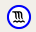
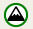
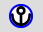
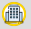
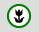

Explora a toponimia de Boiro
Este mapa forma parte do proxecto Boiro, unha vila orientada ao mar. Nel recóllense topónimos, espazos patrimoniais e elementos da paisaxe costeira traballados polo alumnado a partir da relación entre territorio, lingua, historia e actividades económicas.
Preme nos puntos do mapa para acceder ás fichas, imaxes e podcasts elaborados polo alumnado.
Topónimos

Topónimos de paisaxe e formas de relevo litoral
Topónimos orográficosTopónimos de paisaxe vexetal

Topónimos mariñeirosAntropónimos
Patronímicos

Topónimos urbanos
AgrariosOutros elementos
Lendas e podcasts
Patrimonio histórico
 Paradas do Paseo de Jane
Paradas do Paseo de Jane
No mapa poderás descubrir:
🌊 Toponimia litoral
O alumnado puido comprobar como unha parte moi importante dos topónimos da zona de Boiro está directamente relacionada coa paisaxe litoral e costeira, tal e como se pode apreciar nunha simple visual do mapa elaborado polo alumnado. A través do traballo co mapa, identificáronse nomes de lugares vinculados ao mar, ás formas do relevo costeiro, ás praias, ás puntas, aos esteiros, á vexetación propia destas áreas e ás actividades mariñeiras.
Este proceso permitiu entender que a toponimia non é arbitraria, senón que funciona como unha forma de memoria do territorio, reflectindo os usos económicos, a relación histórica da comunidade co mar e a maneira na que a poboación foi interpretando a súa contorna.
Ademais, no mapa aparecen tamén outros topónimos relacionados coas actividades agrarias, coa historia local, patronímicos ou con outras formas tradicionais de identificación dos lugares.
Preme nos puntos do mapa para acceder ás fichas e á información elaborada polo alumnado.
🎙️ Lendas e podcasts
A tradición oral forma parte esencial da identidade cultural do territorio. Moitos lugares conservan relatos transmitidos de xeración en xeración, nos que se mesturan memoria, imaxinación popular e explicación simbólica da paisaxe.
Neste proxecto, o alumnado recolleu e reinterpretou diferentes lendas vinculadas ao territorio de Boiro e da súa contorna, incorporándoas ao mapa como parte do patrimonio inmaterial.
Como resultado deste traballo, elaboráronse podcasts publicados en iVoox, nos que o alumnado narra estas historias. Estes audios permiten achegarse ás lendas dunha maneira máis viva e accesible, combinando investigación, expresión oral, creatividade e uso das tecnoloxías dixitais.
Preme nos puntos do mapa para acceder ás fichas, imaxes e podcasts elaborados polo alumnado.
🏛️ Patrimonio histórico
O mapa recolle diferentes elementos do patrimonio histórico e arqueolóxico da zona, permitindo localizar e contextualizar espazos de especial relevancia cultural.
A través deste traballo, o alumnado puido comprender a importancia de conservar, interpretar e valorar o patrimonio como parte da identidade colectiva e como fonte de coñecemento do pasado.
No mapa, estes elementos aparecen identificados coa icona vermella de patrimonio, o que permite diferencialos doutros contidos relacionados coa toponimia, as lendas ou a arquitectura.
Preme nos puntos do mapa para acceder ás fichas, imaxes e información elaborada polo alumnado.
🏘️ Arquitectura mariñeira e sostible
O estudo da arquitectura mariñeira desenvolveuse a través de diferentes actividades, entre elas o “Paseo de Jane”, unha saída didáctica pola contorna de Cabo de Cruz na que o alumnado analizou distintos espazos vinculados á actividade marítima e á organización do territorio costeiro.
No mapa inclúense as principais paradas desta saída nas que o propio alumnado explicaba aos compañeiros aspectos como a historia, as funcións e a evolución de determinados puntos do trazado urbano: a lonxa, o porto antigo e o porto novo, a fábrica de conservas, o castro do Achadizo, o club de remo, a depuradora e outros puntos significativos da contorna.
Estes lugares permiten visualizar a relación entre os espazos construídos, as actividades económicas ligadas ao mar e a evolución histórica da paisaxe costeira.
Ademais, o alumnado traballou estes contidos a través dun recurso en eXeLearning centrado na arquitectura mariñeira e sostible, reflexionando sobre o uso dos materiais, a adaptación ao medio, os modelos urbanos actuais e a necesidade de construír espazos máis respectuosos coa paisaxe.
Acceder ao recurso eXeLearning sobre arquitectura mariñeira e sostible
🏺 Saída ao castro de Neixón
O proxecto culminou coa saída ao castro de Neixón, un espazo no que conflúen moitos dos elementos traballados ao longo das diferentes actividades.
Nesta visita, o alumnado puido analizar directamente a relación entre o asentamento castrexo e o mar, comprendendo a importancia das actividades económicas vinculadas ao litoral xa na época prerromana e castrexa.
Ademais, identificáronse elementos do patrimonio arqueolóxico, formas de organización do espazo e exemplos de arquitectura propia dos poboados castrexos, ao tempo que se conectaron estes aspectos coa toponimia local e coas lendas asociadas ao lugar, como a da moura do castro.
Deste xeito, a visita permitiu integrar coñecementos sobre patrimonio, toponimia, tradición oral, arquitectura, actividades económicas e relación co medio, funcionando como síntese final do proxecto.


Saída ao castro de Neixón:
A actividade permite comprender como os nomes dos lugares conservan información sobre a paisaxe, os usos económicos, a historia local e a memoria colectiva da comunidade.